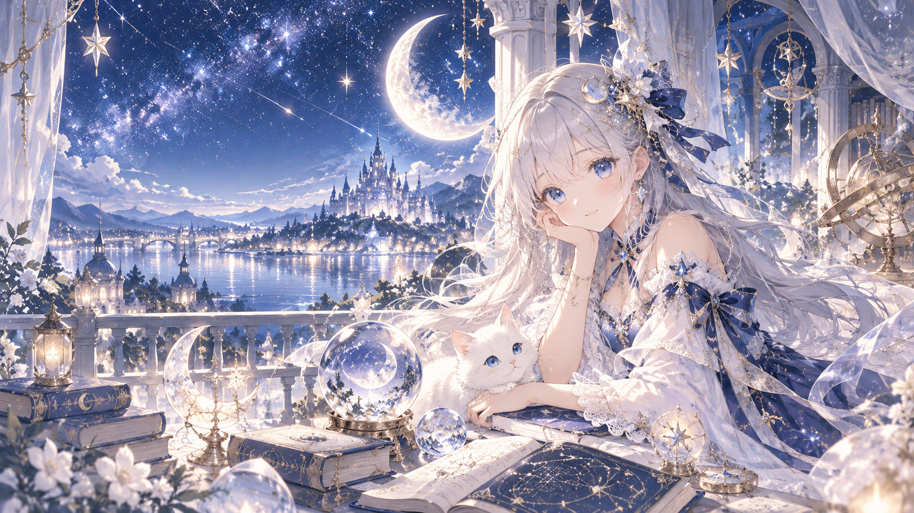
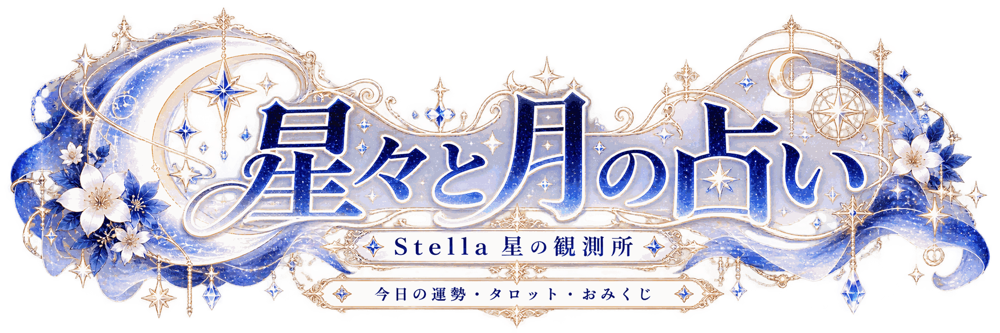

Stella · 星の観測所

星々と月の占い
静かな星の夜に、心へ届くひとことを。
気になる光を、そっと選んでみてください。
✦ 星の三択占い
月の光、星の光、宵の光。心が惹かれるものを、ひとつ選んでください。
気になる光は、いつでも選び直せます。
☾ タロット1枚引き
心に浮かぶ問いを、大切にしてみてください。カードが映す言葉を、今のあなたに合う形で受け取れます。
心に残る言葉だけを、そっと持ち帰ってください。
✧ 今日の運勢
星の本をそっと開くように。今日という一日に、寄り添う言葉をお届けします。
入力したお名前は、サイトの外へ送信されません。
☆ 月夜のおみくじ
月明かりに包まれた小さな箱から、今のあなたへ一枚の便りを。
そのとき出会った言葉を、気軽に楽しんでください。